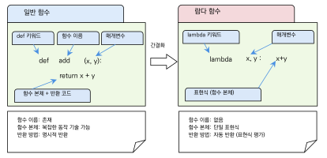
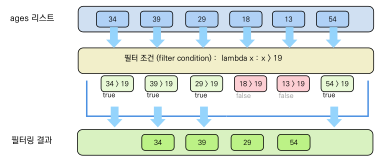
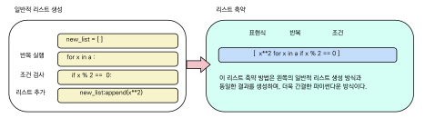
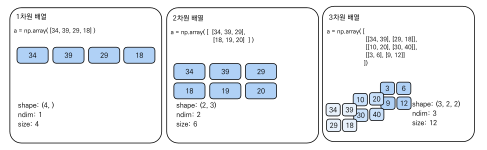
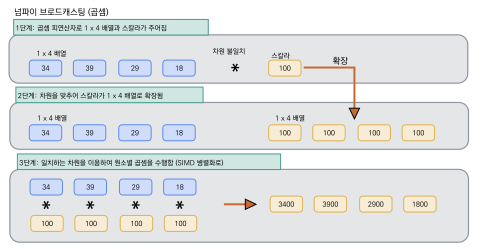

파이썬다운 코딩과 넘파이
이 장을 마치면
- 리스트·딕셔너리·집합 컴프리헨션으로 간결한 코드를 작성할 수 있다.
lambda,filter(),map()을 상황에 맞게 활용할 수 있다.- 넘파이(NumPy)의
ndarray특성과 장점을 이해할 수 있다. - 벡터화 연산과 브로드캐스팅으로 효율적으로 계산할 수 있다.
지금까지 우리는 파이썬의 기본 문법부터 함수, 자료구조, 파일 입출력, 클래스까지 단계적으로 배워 왔다. 이번 장에서는 한 단계 더 나아가, 파이썬을 "파이썬답게" 사용하는 방법을 배운다. 모든 프로그래밍 언어에는 그 언어의 철학과 관용적 표현이 있는데, 파이썬 커뮤니티에서는 이를 파이써닉Pythonic하다고 표현한다. 파이써닉한 코드란 파이썬의 특성을 최대한 살려 간결하고, 읽기 쉽고, 효율적으로 작성된 코드를 뜻한다.
이 장의 전반부에서는 람다 함수, filter(), map(), 그리고 리스트 축약 표현을 배운다.
이 도구들은 반복문과 함수를 조합해야 하는 작업을 한 줄로 표현할 수 있게 해 주며, 실무에서 매우 빈번하게 사용된다.
후반부에서는 과학 계산의 핵심 라이브러리인 넘파이NumPy를 다룬다.
넘파이의 다차원 배열 ndarray는 데이터 과학, 머신러닝, 딥러닝의 기초 자료구조로서,
파이썬 리스트보다 수십 배 빠른 수치 연산을 가능하게 한다.
이 장을 마치면 여러분은 for 반복문 대신 한 줄의 리스트 축약 표현으로 데이터를 가공하고, 넘파이 배열로 대량의 수치 데이터를 효율적으로 처리하는 능력을 갖추게 될 것이다.
11.1 간결한 표현을 위한 람다 함수
프로그래밍을 하다 보면 아주 간단한 기능의 함수를 딱 한 번만 쓰고 싶을 때가 있다.
예를 들어 두 수의 합을 구하거나, 리스트의 각 요소를 제곱하거나, 특정 조건을 만족하는지 검사하는 짧은 함수가 필요한 경우가 빈번하다.
이럴 때마다 def 키워드로 함수 이름을 짓고, 몸체를 작성하고, return을 쓰는 과정이 번거롭게 느껴질 수 있다.
파이썬은 이런 경우를 위해 람다 함수lambda function를 제공한다.
람다 함수는 람다 표현식lambda expression이라고도 부르며, 이름이 없기 때문에 익명 함수anonymous function라고도 한다.
C/C++ 등의 언어에서도 람다 표현식이 지원되지만, 파이썬의 람다 함수는 특히 간결한 문법 덕분에 널리 사용된다. 이 절에서는 일반 함수와 람다 함수의 차이를 이해하고, 람다 함수가 왜 "파이써닉"한 코딩의 핵심 도구인지 살펴본다.
일반 함수와 람다 함수 비교
먼저 두 수의 합을 구하는 일반 함수를 살펴보자.
# 일반 함수를 이용한 덧셈
def add(x, y):
return x + y
print('Sum of 100 and 200 :', add(100, 200))Sum of 100 and 200 : 300
이 함수는 def 키워드, 함수 이름 add, 매개변수 (x, y), 그리고 return x + y로 구성된다.
두 수를 더하는 매우 간단한 함수임에도 불구하고 함수 이름, 함수 몸체, 반환을 위한 키워드인 return까지 모든 문법을 지켜야 한다.
그러나 이 함수가 하는 일은 단순히 x + y를 반환하는 것뿐이다.
파이썬은 이처럼 def 키워드, 함수 이름, return 문과 같은 본질적이지 않은 부분을 생략하고 그 본질적인 기능만을 축약시키도록 표현식을 만들 수 있는데, 이것이 바로 람다 함수이다.
이를 람다 함수로 바꾸면 한 줄로 표현할 수 있다.
# 람다 함수를 이용한 덧셈
add = lambda x, y: x + y
print('Sum of 100 and 200 :', add(100, 200))Sum of 100 and 200 : 300
위 코드를 살펴보면 lambda라는 키워드로 람다 함수를 정의하는데, x, y를 매개변수로 받고 표현식 x + y를 반환하는 기능을 가지고 있다.
이때 def add(x, y):와 같은 헤드 필요 없이 인자 두 개를 더하는 기능을 가지는 형태로 구성되어 있다.
이제 이 익명의 함수(lambda)의 변수 add에 대입해 준 다음 add라는 람다 함수에 100, 200 매개변수를 넣어서 덧셈 연산을 수행하고 있다.
그림 11.1은 일반 함수와 람다 함수의 구조를 비교하여 보여 준다.

그림 11.1에서 보듯이, 일반 함수는 def 키워드, 함수 이름, 매개변수, return 문으로 구성되지만, 람다 함수는 매개변수와 표현식만으로 간결하게 표현된다.
람다 함수의 문법
람다 함수를 정의하는 문법은 다음과 같이 매우 간결하고 단순하다.
lambda parameters : expressionlambda 키워드 뒤에 매개변수를 쓰고, 콜론(:) 뒤에 반환할 표현식을 적는다.
return 문 없이 콜론 뒤의 표현식이 자동으로 반환된다.
정리하면 람다 함수는 return 문도 없고 함수의 이름도 없는 아주 간략화된 함수이다.
그리고 람다 함수의 반환 값은 변수 없이 식 한 줄로 표현할 수 있어야 하기 때문에, 복잡한 함수가 필요하면 def 키워드로 함수를 정의해야 한다.
람다 함수의 호출은 일반 함수와 같이 반환 값 뒤에 매개변수들을 괄호로 둘러싸주면 된다. 다음은 람다 함수의 정의 방법과 인자 전달 방법을 보여 준다.
# 람다 함수 정의와 호출
(lambda x, y : x + y)(100, 200) # 300을 반환인라인 람다 함수
람다 함수는 변수에 할당하지 않고 즉석에서 사용할 수도 있다. 이러한 방식을 인라인(inline) 호출이라 한다.
# 변수에 할당하지 않고 바로 호출
print('Sum of 100 and 200 :', (lambda x, y: x + y)(100, 200))Sum of 100 and 200 : 300
위 코드에서 (lambda x, y: x + y)가 함수 자체를 만들고, 바로 뒤의 (100, 200)이 인자를 전달하여 호출한다.
그렇다면 여기서 의문이 든다. 두 수의 합을 표현하려면 (lambda x, y : x + y)(100, 200)과 같이 표현식을 길게 써서 익명 함수를 호출하여 구할 필요 없이 100 + 200 표현식을 이용하는 것이 훨씬 간단하지 않은가?
그렇다. 위의 예제는 람다 함수의 사용 문법을 알려주기 위한 예제로 일반적으로 사용되는 것은 아니다.
대신 람다 함수는 filter()나 map() 등의 함수에 인자로 전달할 때 편리하게 사용할 수 있는 함수이다.
람다 함수가 "파이써닉"한 이유
파이썬 커뮤니티에서 람다 함수를 "파이써닉"하다고 평가하는 이유는 무엇일까? 그것은 파이썬의 핵심 철학인 "Simple is better than complex"(간단한 것이 복잡한 것보다 낫다)와 직결된다.
첫째, 람다 함수는 코드의 의도를 명확하게 전달한다.
filter(lambda x: x >= 19, ages)라는 코드를 읽으면, 별도의 함수 정의를 찾아볼 필요 없이 "ages에서 19 이상인 것만 걸러낸다"는 의도가 즉시 드러난다.
둘째, 람다 함수는 축약된 표현이 가능하기 때문에 코드가 간결해진다. 일반 함수의 경우 재사용을 위하여 함수를 위한 이름과 메모리 공간의 할당이 필요하지만, 람다 함수는 메모리 공간을 별도로 할당하지 않기 때문에 메모리를 절약할 수 있다. 즉, 람다 함수는 익명 함수이므로 표현식 사용된 후 다음 코드로 이동하면 힙 메모리에서 사라지게 된다.
셋째, 람다 함수는 일회성 사용에 최적화되어 있다. 일반적으로 특정한 목적으로 한번 사용한 후 뒤에는 재사용하지 않는 특징이 있다.
장점: 람다 함수는 축약된 표현이 가능하기 때문에 코드가 간결해진다.
일반 함수의 경우 재사용을 위하여 함수를 위한 이름과 메모리 공간의 할당이 필요하지만,
람다 함수는 메모리 공간을 별도로 할당하지 않기 때문에 메모리를 절약할 수 있다.
단점: lambda 선언문 뒤에 쉼표와 콜론 수식으로 구성되어 가독성이 떨어진다.
즉, 람다식은 그 자체에 쉼표(,)를 포함하고 있기 때문에 다른 매개변수와 시각적인 구분이 모호해지고 읽고 이해하기가 어렵다.
람다 함수는 lambda 매개변수: 표현식 형태로 정의하는 이름 없는 간단한 함수이다.
return 문 없이 한 줄의 표현식만 허용되며, 주로 일회성으로 사용되는 간단한 함수에 적합하다.
일반 함수와 동일하게 함수 형식의 기능을 잘 수행하며, filter(), map() 등에 인자로 전달할 때 가장 유용하다.
람다 함수는 표현식 하나만 허용하므로 복잡한 로직에는 적합하지 않다.
여러 줄의 코드나 조건 분기가 필요하다면 반드시 def로 일반 함수를 정의하자.
또한 표현식 안에서 새로운 변수를 선언할 수 없다는 점에 주의하자.
11.2 filter(), map()과 리스트 축약
앞에서 익명 함수라고 하는 람다 함수를 필터나 맵 기능에서 주로 사용하는 함수라고 설명하였다. 그렇다면 지금부터 이 필터 함수filter function와 맵 함수map function가 정확히 무엇인지, 또 람다 함수는 여기에서 어떻게 사용되는지에 대해 알아보도록 하자. 그리고 같은 기능을 더 간결하게 표현하는 리스트 축약 표현list comprehension까지 배워, 파이써닉한 코딩의 핵심 기법을 익힌다.
filter() 함수
filter() 함수는 반복 가능한 객체의 각 요소를 함수에 넣어 그 반환 값이 참인 것만 묶어서 반환한다.
filter() 함수의 문법은 다음과 같다.
filter(function, iterable)이제 임의의 나이 값이 들어 있는 숫자 리스트에서 19세 이상의 성년 나이만을 선별하여 출력하는 예제를 살펴보자. 먼저 일반 함수를 사용하는 방법부터 보자.
def adult_func(n): # 나이가 19 이상이면 True, 아니면 False
if n >= 19:
return True
else:
return False
ages = [34, 39, 20, 18, 13, 54]
print('Adult list :')
for a in filter(adult_func, ages): # filter() 함수로 필터링
print(a, end = ' ')Adult list : 34 39 20 54
이 기능을 구현하기 위하여 변수 n의 값이 성년의 나이인 19세 이상이면 True를, 19세 미만이면 False를 반환하는 adult_func() 함수를 생성하였다.
함수의 외부에는 임의의 나이 값을 가지는 ages 리스트가 있으며, 이를 filter() 함수에 adult_func() 함수와 필터링할 반복가능한 리스트 변수 ages를 인자로 넣어주었다.
이 filter() 함수는 ages의 요소들을 하나씩 adult_func() 함수에 인자로 넣어 True가 반환되는 요소만 묶은 리스트를 반환해 온다.
따라서 ages 변수의 요소에서 성년의 나이가 아직 되지 않은 18, 13은 출력되지 않는다.
여기에서 사용된 adult_func() 함수는 다음과 같은 특징이 있음을 알 수 있다.
알고리즘이 비교적 단순하고, 별도의 내부 변수가 필요 없으며, 성년 리스트를 필터링한 후 더 이상 재사용할 필요가 없다.
이와 같은 특징을 가진 adult_func() 함수는 다음과 같이 lambda 키워드를 사용해서 익명 함수로 만들어 코드를 단순하게 만들 수 있다.
ages = [34, 39, 20, 18, 13, 54]
adult_ages = list(filter(lambda x: x >= 19, ages))
print('Adult list :', adult_ages)Adult list : [34, 39, 20, 54]
비록 코드는 단순하지만, 필터링 역할은 같기 때문에 결과는 이전과 동일한 것을 확인할 수 있다. 이와 같이 람다 함수를 사용하면 간결하면서도 핵심적인 알고리즘에 집중할 수 있다는 장점이 있으며, 일반적으로 특정한 목적으로 한번 사용한 후 뒤에는 재사용하지 않는 특징이 있다.
그림 11.2은 filter() 함수의 동작 과정을 시각적으로 보여 준다.

그림 11.2에서 보듯이, 반복 가능한 객체 ages의 각 요소에 대해 람다 함수의 조건(x >= 19)을 검사하여 True인 요소만 반환한다.
음수 필터링에 람다 함수를 활용하는 예제도 살펴보자.
n_list = [-30, 45, -5, -90, 20, 53, 77, -36]
minus_list = list(filter(lambda x: x < 0, n_list))
print('Negative list :', minus_list)Negative list : [-30, -5, -90, -36]
map() 함수
다음은 맵 함수map function에 대해 알아보도록 하자.
파이썬은 map()이라는 내장함수를 제공하는데 이 함수는 반복 가능한 자료형의 각 요소들에 대해서 지정된 매핑 함수를 적용하여 반복 가능한 자료형을 반환한다.
map() 함수의 문법은 다음과 같다.
map(function, iterable,...)map() 함수는 두 개 이상의 인자를 취하는데 첫 번째 인자는 매핑 함수이며, 두 번째 인자는 매핑 함수에 입력될 리스트와 같은 반복 가능 객체이다.
리스트 a에 [1, 2, 3, 4, 5, 6, 7]이라는 항목 값이 있을 경우, 이 각각의 값에 제곱 연산을 적용한 후 그 결과 [1, 4, 9, 16, 25, 36, 49] 리스트를 얻고자 하는 경우를 생각해 보자.
먼저 for 반복문을 사용하는 전통적인 방법을 살펴보자.
a = [1, 2, 3, 4, 5, 6, 7]
square_a = []
for n in a:
square_a.append(n ** 2) # n의 제곱을 square_a 리스트에 추가
print(square_a)[1, 4, 9, 16, 25, 36, 49]
이 코드를 map() 함수와 람다 함수를 사용하면 다음과 같이 더욱 간결하게 수정할 수 있다.
a = [1, 2, 3, 4, 5, 6, 7]
square_a = list(map(lambda x: x**2, a))
print(square_a)[1, 4, 9, 16, 25, 36, 49]
map() 함수를 사용하면 리스트와 같은 반복 가능 객체의 개별적인 항목 값들이 차례로 매핑 함수에 적용되어 실행 결과와 같이 [1, 2, 3, 4, 5, 6, 7]의 제곱 값을 가지는 [1, 4, 9, 16, 25, 36, 49] 리스트가 반환된다.
이해를 돕기 위해서 리스트의 모든 요소에 대해 제곱과 세제곱을 수행하는 다음과 같은 람다 함수를 만들어 보도록 하자.
a = [1, 2, 3, 4, 5, 6, 7]
square_a = list(map(lambda x: x**2, a))
cubic_a = list(map(lambda x: x**3, a))
print('square_a =', square_a)
print('cubic_a =', cubic_a)square_a = [1, 4, 9, 16, 25, 36, 49] cubic_a = [1, 8, 27, 64, 125, 216, 343]
이와 같은 방법으로 매핑되어 반환되는 리스트가 각각 square_a, cubic_a에 저장되어 출력된다.
이렇게 map 함수와 람다 함수를 사용하면 간결한 표현식으로 리스트의 요소들을 변환할 수 있다.
리스트 축약 표현
다음으로 반복 가능 객체를 이용하여 쉽게 리스트를 생성할 수 있는 기능인 리스트 축약 표현list comprehension에 대해 알아보자.
파이썬은 리스트의 축약 표현을 통해서 map, filter의 기능을 구현하는 것도 가능하다.
이 경우에는 람다 함수의 본체가 될 표현식을 그대로 사용하기 때문에 따로 람다 함수를 정의할 필요가 없다.
리스트의 축약 표현은 리스트뿐만 아니라 집합과 같은 반복 가능한 모든 객체에 대해 적용할 수 있다.
리스트 축약 표현의 문법은 다음과 같다.
[expression for var in iterable] # map 기능
[expression for var in iterable if condition] # map + filter 기능이 문법의 expression에는 반복 가능 객체의 각 요소에 대해서 적용되는 수식으로 앞서 살펴본 맵 함수의 기능을 수행한다.
다음에 나타난 for var in iterable에는 반복 가능 객체의 내부 항목을 반복적으로 꺼내는 기능이 들어간다.
이어서 나타나는 if condition은 필터의 기능을 하게 된다.

그림 11.3에서 보듯이, 표현식(map 기능), 반복(for 루프), 조건(filter 기능)의 세 부분으로 구성된다.
축약 표현식을 이용한 값의 수정
리스트 축약 문법에서 if 조건 표현식은 생략 가능하다.
따라서 다음과 같은 방법을 통해서 반복되는 값을 표현식에 적용하는 간단한 기능을 먼저 알아보자.
앞서 map() 함수와 람다 함수를 이용한 리스트의 제곱을 리스트 축약 표현으로 바꾸면 다음과 같다.
a = [1, 2, 3, 4, 5, 6, 7]
a = [x**2 for x in a] # 리스트의 각 요소에 x**2 적용
print(a)[1, 4, 9, 16, 25, 36, 49]
이 축약 표현식은 for x in a 표현식을 통해서 반환되는 x의 요소 각각에 대해서 x**2를 통해 x의 제곱 값을 반환하므로 위의 람다 함수와 map() 함수를 사용하는 것과 동일한 결과를 얻을 수 있다.
range() 함수를 이용하여 연속된 값을 가지는 리스트를 생성하는 것까지 리스트 축약 표현에 넣으면 다음과 같이 간결해진다.
a = [x**2 for x in range(1, 8)]
print(a)[1, 4, 9, 16, 25, 36, 49]
이때 사용되는 반복자로는 문자열을 이용하는 것도 가능하다.
다음 코드를 살펴보면 "Hello World"라는 문자열에 대해 for x in 표현식을 통해서 반환되는 개별 문자열 x에 대해 upper() 메소드를 적용하여 대문자로 변경하는 기능을 수행한다.
st = 'Hello World'
s_list = [x.upper() for x in st]
print(s_list)['H', 'E', 'L', 'L', 'O', ' ', 'W', 'O', 'R', 'L', 'D']
if 조건식을 이용한 필터링
앞서 살펴본 filter() 함수와 람다 함수를 사용한 필터링은 리스트 축약 표현으로 쉽게 구현할 수 있다.
나이 리스트를 필터링하여 19 이상의 성년의 나이 값만을 반환하는 코드를 비교해 보자.
# filter와 람다를 사용한 방법
ages = [34, 39, 20, 18, 13, 54]
adult_ages = list(filter(lambda x: x >= 19, ages))
print('Adult list :', adult_ages)위의 코드는 다음과 같은 리스트 축약 표현을 사용할 수 있다.
# 리스트 축약 표현을 사용한 방법
ages = [34, 39, 20, 18, 13, 54]
print('Adult list :', [x for x in ages if x >= 19])Adult list : [34, 39, 20, 54]
이러한 리스트 축약 표현은 for x in ages라는 반복문을 통해 할당된 각각의 x에 대하여 if 키워드 다음에 나타나는 x >= 19라는 조건식 필터를 적용하였으며, 이에 따라 다음과 같이 x 값이 19 이상인 값만 반환된다.
이제 이 기능을 활용할 수 있는 예제를 살펴보자.
우선 0에서 9까지의 숫자를 생성한 후 이 숫자에 대해 if 조건식을 통해 짝수 값과 홀수 값을 필터링한 후, 필터링된 값에 대해 x * x를 통해 각 값의 제곱을 구한 후 이 값을 리스트에 넣는 과정을 알아보자.
>>> [x for x in range(10)] [0, 1, 2, 3, 4, 5, 6, 7, 8, 9] >>> [x * x for x in range(10)] [0, 1, 4, 9, 16, 25, 36, 49, 64, 81] >>> [x for x in range(10) if x % 2 == 0] [0, 2, 4, 6, 8] >>> [x for x in range(10) if x % 2 == 1] [1, 3, 5, 7, 9] >>> [x * x for x in range(10) if x % 2 == 0] [0, 4, 16, 36, 64] >>> [x * x for x in range(10) if x % 2 == 1] [1, 9, 25, 49, 81]
리스트 축약 표현은 매우 강력해서 다음과 같이 여러 개의 정수 문자열을 입력 받아 이를 int() 함수를 사용해서 정수형 값을 가진 리스트로 변환하는 것도 손쉽게 할 수 있다.
>>> s = input('Enter 5 integers : ').split()
Enter 5 integers : 10 20 30 40 50
>>> lst = [int(x) for x in s]
>>> lst
[10, 20, 30, 40, 50]
리스트 축약 표현이 "파이써닉"한 이유
그렇다면 리스트의 축약 표현은 어떤 장점이 있을까? 리스트 축약 표현이 파이썬 커뮤니티에서 "파이써닉"하다고 평가받는 데에는 단순한 간결함 이상의 이유가 있다.
첫째, map() 함수는 map 객체를 생성하지만, 축약 표현을 사용하면 리스트 객체를 바로 생성할 수 있다.
즉, list(map(...))처럼 list()로 감싸는 단계가 불필요해진다.
둘째, 간결한 표현으로 강력한 기능을 사용할 수 있다.
map과 filter를 조합하려면 두 함수를 중첩해야 하지만, 축약 표현은 for와 if를 하나의 대괄호 안에 담아 한 줄로 표현할 수 있다.
셋째, map() 함수를 사용하는 것보다 속도가 더 빠르다.
파이썬 내부적으로 리스트 축약 표현은 최적화되어 있어, 특히 간단한 변환 작업에서 map() 함수보다 약간 더 빠르게 동작한다.
넷째, 축약 표현은 필터링까지 할 수 있어 filter() 함수의 역할도 수행한다.
파이썬은 map() 함수를 사용하여 리스트의 각 항목에 대해 다양한 연산을 반복적으로 적용할 수 있으며,
이 기능을 리스트의 축약 표현을 통해서도 구현할 수 있다.
리스트 축약 표현은 직접 리스트 객체를 바로 생성하고, 간결한 표현으로 강력한 기능을 사용할 수 있으며,
map() 함수보다 속도도 빠르고, 필터링까지 한 줄로 할 수 있다는 장점이 있다.
리스트 축약 표현이 filter()/map()보다 빠른 이유는 각 요소마다 함수 호출 오버헤드가 발생하지 않고,
파이썬 인터프리터가 최적화된 바이트코드로 실행하기 때문이다.
filter(함수, 반복가능객체)— 조건에 맞는 요소만 걸러낸다.map(함수, 반복가능객체)— 각 요소에 함수를 적용한 결과를 반환한다.[표현식 for x in 반복가능객체 if 조건]— 리스트 축약 표현은filter와map의 기능을 한 줄로 표현한다.- 리스트 축약 표현은 파이썬의 고급 기능으로 자주 사용되며,
map()보다 직관적이고 속도도 빠르다.
11.3 넘파이 라이브러리
8장에서 우리는 여러 가지 라이브러리 모듈에 대해서 알아보았다. 이 절에서는 과학 계산, 데이터 과학, 머신러닝, 딥러닝 등의 최신 분야에서 많이 사용되는 외부 패키지 넘파이NumPy에 대해서 알아보자. 넘파이는 파이썬의 과학 계산을 위한 가장 기본적인 패키지인데 "넘피"라고도 읽는다. 과학 계산 분야와 머신러닝, 딥러닝 분야에서는 많은 데이터를 빠르게 분석해야만 하는 작업이 필요한데, 이러한 작업에 넘파이는 매우 효율적이다. 따라서 최근에는 파이썬의 가장 핵심적인 기능으로 주목을 받고 있다.
넘파이의 특징
다음은 넘파이의 중요한 다섯 가지 특징을 정리한 것이다.
- 강력한 다차원 배열 처리: 넘파이는 다차원 배열 객체인
ndarray를 제공한다. 이를 통해 효과적으로 다차원 데이터를 처리할 수 있으며, 이는 과학 계산 작업이나 머신러닝 알고리즘에서 필수적이다. - 빠른 연산 속도: 넘파이는 내부적으로 C 언어로 구현되어 있어, 파이썬 내장 리스트에 비해 빠른 연산 속도를 보여준다. 이 기능으로 인해 대량의 데이터를 처리할 때 효율성이 크게 향상된다.
- 다양한 수학 함수를 제공: 넘파이는 간단한 사칙연산부터 난수 생성 등과 같은 복잡한 수학 함수까지 다양한 함수를 제공한다. 또한, 이러한 함수들은 배열의 각 요소에 자동으로 적용되는 벡터화 연산을 지원한다.
- 편리한 브로드캐스팅 기능: 넘파이의 브로드캐스팅 기능은 서로 다른 크기의 배열 간에도 산술 연산을 가능하게 한다. 이는 코드를 매우 직관적이고 간결하게 만들어 주는 효과가 있다.
- 다른 라이브러리와의 호환성: 넘파이는 파이썬 데이터 과학 생태계의 핵심으로 판다스, 맷플롯립, 사이킷런, 텐서플로 등 다른 많은 라이브러리들이 넘파이 배열을 기반으로 동작한다.
넘파이 설치와 임포트
파이썬의 여러 가지 기능과 데이터 과학, 과학 계산용 패키지를 묶어 둔 대표적인 프로그램이 바로 아나콘다Anaconda 배포판인데, 이 배포판을 설치하면 파이썬과 함께 넘파이도 설치된다.
하지만 일반적인 경우 윈도우나 리눅스, 맥 운영체계의 명령 프롬프트상에서 pip를 이용하여 설치하는 과정이 필요하다.
pip는 파이썬의 패키지 관리 소프트웨어로 파이썬 표준 라이브러리에 포함되지 않은 외부 라이브러리를 설치하도록 도와주는 도구이다.
$ pip install numpy
넘파이를 사용할 때는 관례적으로 np라는 별명을 붙여 임포트한다.
import를 이용하여 numpy를 가지고 오되, as np 문을 통해 np라는 별명을 사용할 수 있도록 설정한다.
import numpy as npndarray 생성
넘파이 패키지에는 ndarray라는 다차원 배열 클래스가 있는데, 이 클래스에는 동일한 형의 자료 값을 연속적으로 저장할 수 있다.
파이썬의 리스트 클래스에는 문자나, 정수, 실수 등을 섞어서 연속적으로 저장할 수 있지만, ndarray에서는 빠른 연산을 위해 이러한 기능은 지원하지 않는다.
또한, 넘파이 다차원 배열은 형태, 항목의 크기, 차원, 항목의 바이트 크기 등의 속성들이 내부에 포함되어 있다.
다음 실습 코드와 같이 a = np.array([1, 2, 3])과 같이 3개의 정수 값을 요소로 가지는 ndarray를 생성하여 그 속성을 하나하나 살펴보도록 하자.
import numpy as np
a = np.array([1, 2, 3]) # 리스트로 1차원 배열 생성
b = np.array([[1, 2], [3, 4]]) # 2차원 배열 생성
print('a =', a)
print('b =')
print(b)a = [1 2 3]
b =
{}
[[1 2]
[3 4]]
ndarray의 주요 속성
넘파이의 ndarray에는 배열의 구조와 데이터 형에 대한 다양한 속성이 포함되어 있다.
다음 코드를 통해 이러한 속성들을 살펴보자.
a = np.array([1, 2, 3])
print('shape :', a.shape) # 배열의 형상
print('ndim :', a.ndim) # 차원의 개수
print('dtype :', a.dtype) # 원소의 자료형
print('size :', a.size) # 전체 원소의 개수
print('itemsize:', a.itemsize) # 원소 하나의 바이트 크기shape : (3,) ndim : 1 dtype : int64 size : 3 itemsize : 8
우선 ndarray에는 shape이라는 속성이 있는데 이는 배열의 차원 정보를 가지고 있다.
1차원 배열은 (3,)와 같은 값으로 표시되며, 3행 4열의 원소를 가지는 2차원 배열이 있을 경우 (3, 4)라는 shape 값으로 표시된다.
다음으로 ndim이라는 속성도 있다. 이것은 배열의 축, 즉 차원의 개수를 포함하고 있다.
1차원 배열의 경우 1이라는 값, 2차원 배열은 2라는 값을 가진다.
dtype이라는 속성은 data type의 약자인데 배열 원소 객체의 자료형을 기술한다.
정수값을 원소로 가지는 경우 디폴트 데이터 타입은 int64라는 64비트 정수형 자료형이다(64비트 운영체제 기준).
다음으로는 itemsize인데 이것은 배열 원소 객체의 크기를 바이트 단위로 표시한다.
int64라는 64비트 정수형 자료형의 경우 itemsize는 8, float64라는 자료형도 8바이트이므로 itemsize는 8이 된다.
size는 배열 원소의 개수인데 다음 코드와 같이 3개의 원소가 있을 경우 그 값은 3이 된다.
그림 11.4은 1차원 및 2차원 ndarray의 구조를 시각적으로 보여 준다.

그림 11.4에서 보듯이, 1차원 배열은 하나의 축을 가지며, 2차원 배열은 행과 열의 두 축을 가진다. shape, ndim, dtype, size 등의 속성으로 배열의 구조를 확인할 수 있다.
| 속성 | 설명 |
|---|---|
ndim | 배열 축 혹은 차원의 개수 |
shape | 배열의 차원으로 (m, n) 형식의 튜플 형이다 |
size | 배열의 원소의 개수이다. (m, n) shape 배열의 size는 m*n이다 |
dtype | 배열 내의 원소의 형을 기술하는 객체이다 |
itemsize | 배열 내의 원소의 크기를 바이트 단위로 기술한다 |
data | 배열의 실제 원소를 포함하고 있는 버퍼 |
다양한 배열 생성 함수
넘파이는 np.array() 이외에도 다양한 배열 생성 함수를 제공한다.
이 함수들은 특정 패턴이나 초기값을 가진 배열을 손쉽게 만들 수 있게 해 준다.
print(np.zeros(5)) # 0으로 채운 배열
print(np.ones((2, 3))) # 1로 채운 2x3 배열
print(np.arange(0, 10, 2)) # 0부터 10 미만까지 간격 2
print(np.linspace(0, 1, 5)) # 0부터 1까지 균등 간격 값 5개
print(np.random.rand(3)) # 0과 1 사이의 난수 3개
print(np.random.randint(0, 10, size=5)) # 0~9 범위의 정수 난수 5개[0. 0. 0. 0. 0.]
{}
[[1. 1. 1.]
[1. 1. 1.]]
{}
[0 2 4 6 8]
{}
[0. 0.25 0.5 0.75 1. ]
{}
[0.5488135 0.71518937 0.60276338]
{}
[2 8 4 9 1]
np.zeros()는 모든 원소가 0인 배열을 생성하고, np.ones()는 모든 원소가 1인 배열을 생성한다.
np.arange()는 파이썬의 range()와 유사하게 시작, 끝, 간격을 지정하여 배열을 만든다.
np.linspace()는 시작과 끝 사이를 균등하게 나눈 값들로 배열을 생성하는데, 과학 계산에서 그래프의 x축 값을 만들 때 자주 사용된다.
np.random 서브 모듈의 rand() 함수는 0과 1 사이의 균일 분포 난수를, randint() 함수는 지정한 범위의 정수 난수를 생성한다.
넘파이가 리스트보다 빠른 이유
넘파이 배열이 파이썬 리스트보다 수십 배 빠르게 동작하는 이유는 크게 세 가지이다.
첫째, 넘파이 배열은 동일한 자료형의 데이터만 저장하므로, 메모리에 연속적으로 배치된다. 파이썬 리스트는 각 원소가 서로 다른 자료형을 가질 수 있어, 각 원소에 대한 참조(포인터)를 별도로 저장해야 한다. 반면 넘파이 배열은 데이터가 메모리에 빈틈없이 연속 배치되므로 CPU 캐시를 효율적으로 활용할 수 있다.
둘째, 넘파이의 핵심 연산은 C 언어로 구현되어 있다. 파이썬의 for 반복문은 인터프리터가 한 줄씩 해석하며 실행하지만, 넘파이의 벡터화 연산은 미리 컴파일된 C 코드가 실행되므로 속도가 크게 빠르다.
셋째, 넘파이는 벡터화 연산을 지원한다. 파이썬의 for 반복문 없이 배열 전체에 대해 한 번에 연산을 수행하므로, 반복문의 오버헤드가 없다.
다음 코드는 100만 개의 숫자에 대해 제곱 연산을 수행할 때 리스트와 넘파이 배열의 시간 차이를 보여 준다.
import numpy as np
import time
n = 1_000_000
# 파이썬 리스트
py_list = list(range(n))
start = time.time()
result = [x**2 for x in py_list]
py_time = time.time() - start
# 넘파이 배열
np_arr = np.arange(n)
start = time.time()
result = np_arr ** 2
np_time = time.time() - start
print(f'List comprehension : {py_time:.4f} sec')
print(f'NumPy vectorization: {np_time:.4f} sec')
print(f'NumPy is {py_time/np_time:.1f}x faster')List comprehension : 0.1852 sec NumPy vectorization: 0.0021 sec NumPy is 88.2x faster
위 실행 결과에서 볼 수 있듯이, 100만 개의 원소에 대한 제곱 연산에서 넘파이 배열은 파이썬 리스트 축약 표현보다 약 88배 빠르다(실행 환경에 따라 차이가 있을 수 있다). 이러한 성능 차이는 데이터의 크기가 커질수록 더욱 극적으로 벌어지며, 이것이 데이터 과학과 머신러닝에서 넘파이가 필수적인 이유이다.
np.array()에 리스트를 전달할 때 반드시 대괄호([])로 감싸야 한다.
np.array(1, 2, 3)처럼 쉼표로 직접 나열하면 오류가 발생한다.
또한, 문자열이 포함되어 있고 별도의 자료형을 명시하지 않을 경우 모든 원소들은 문자열 형이 되어 정수의 덧셈, 뺄셈 등의 연산을 사용할 수 없다.
- 넘파이의 핵심은
ndarray— 동일한 자료형의 원소를 가진 다차원 배열이다. np.array(),np.zeros(),np.ones(),np.arange(),np.linspace()등으로 배열을 생성한다.shape,dtype,ndim등의 속성으로 배열의 구조를 확인할 수 있다.- 넘파이는 C 언어 기반 구현과 벡터화 연산으로 파이썬 리스트보다 수십 배 빠른 수치 계산이 가능하다.
11.4 배열 연산과 인덱싱
넘파이 배열의 가장 큰 장점은 요소별 연산이 자동으로 이루어진다는 것이다. 파이썬 리스트에서는 두 리스트를 더하면 리스트가 연결되지만, 넘파이 배열에서는 같은 위치의 원소끼리 더해진다. 이 절에서는 넘파이가 제공하는 벡터화 연산vectorization, 브로드캐스팅broadcasting, 그리고 배열의 다양한 인덱싱 방법을 알아본다. 이 기능들은 데이터 과학에서 대량의 데이터를 처리할 때 반드시 필요한 핵심 도구이다.
벡터화 연산
먼저 파이썬 리스트의 한계를 살펴보자.
어떤 모둠의 학생 4명이 중간시험과 기말시험을 치고 다음과 같은 성적을 얻었다고 가정하자.
이 학생들의 점수를 리스트에 넣고 성적의 합과 평균을 구하기 위해서 +(더하기) 연산을 사용한다면 우리가 원하는 결과를 얻을 수 없을 것이다.
student_mid = [70, 85, 90, 75] # 중간시험 점수
student_fin = [90, 65, 70, 85] # 기말시험 점수
student_sum = student_mid + student_fin
print(student_sum)
# student_sum / 2 # TypeError: unsupported operand type(s)[70, 85, 90, 75, 90, 65, 70, 85]
무엇보다 리스트는 나누기 연산을 지원하지 않기 때문에 student_sum / 2를 통해서 평균을 구하는 것이 불가능하다.
이제 이 코드의 리스트를 넘파이의 다차원 배열로 고쳐서 이 코드를 수행시켜 보자.
import numpy as np
student_mid = np.array([70, 85, 90, 75]) # 중간시험 점수
student_fin = np.array([90, 65, 70, 85]) # 기말시험 점수
student_sum = student_mid + student_fin
print('Total :', student_sum)
print('Average :', student_sum / 2)Total : [160 150 160 160] Average : [80. 75. 80. 80.]
넘파이의 다차원 배열에 대하여 덧셈 연산을 수행하면 배열의 원소 중 첫 원소인 70 + 90의 합 160, 85와 65의 합 150, 90과 70의 합 160, 75와 85의 합 160이 student_sum의 값이 되는 것을 볼 수 있다.
이와 같이 원소끼리의 연산이 이루어지는 것을 벡터화 연산vectorization이라고 한다.
다음으로 student_sum / 2의 결과 역시 모든 원소에 대해서 / 2 연산을 적용시켜 평균값을 출력하는데, 이것을 브로드캐스팅broadcasting 기능이라고 한다.
브로드캐스팅
브로드캐스팅은 크기가 다른 배열이나 배열과 스칼라 값 사이의 연산을 자동으로 처리하는 기능이다.

그림 11.5은 브로드캐스팅의 동작 과정을 보여 준다. 스칼라 값 100이 배열과 같은 크기로 자동 확장되어 원소별 연산이 수행된다.
만일 A 회사의 사원 4명의 급여가 각각 300, 360, 400, 380만 원이라고 할 때, 회사에서 이들에게 100만 원의 상여금을 지급하는 경우를 생각해 보자.
이 경우 이 값들을 넘파이 다차원 배열로 만든 후 + 100 연산으로 모든 값에 100을 더할 수 있다.
만일 이들의 급여를 일괄적으로 20% 인상할 경우 * 1.2를 통해 일괄적으로 인상된 급여를 출력하는 것도 브로드캐스팅을 이용하여 쉽게 할 수 있을 것이다.
sal = np.array([300, 360, 400, 380]) # 사원 4명의 급여
sal_bonus = sal + 100 # 각 급여에 상여금 100 더하기
sal_inc = sal * 1.2 # 각 급여를 20% 인상
print('After bonus:', sal_bonus)
print('After 20% raise:', sal_inc)After bonus: [400 460 500 480] After 20% raise: [360. 432. 480. 456.]
2차원 배열의 연산
이번에는 2행 2열의 2차원 행렬을 다루어 보는 예제이다.
두 개의 이차원 행렬 a와 b에 대하여 덧셈의 결과를 출력해 보면 행렬의 각 원소에 대해 덧셈이 수행된 것을 살펴볼 수 있다.
마찬가지로 뺄셈과 곱셈, 나눗셈도 가능하다.
a = np.array([[1, 2], [3, 4]]) # 2차원 배열 a
b = np.array([[10, 20], [30, 40]]) # 2차원 배열 b
print('a + b =\n', a + b)
print('a * b =\n', a * b) # 원소별 곱셈
print('a @ b =\n', a @ b) # 행렬 곱셈a + b = [[11 22] [33 44]] a * b = [[ 10 40] [ 90 160]] a @ b = [[ 70 100] [150 220]]
여기서 중요한 것은 * 연산과 @ 연산의 차이이다.
* 연산은 동일한 행과 열에 위치한 요소들 간의 곱셈(원소별 곱셈)이고, @ 연산은 행렬 곱 결과이다.
행렬곱 연산은 a 행렬과 b 행렬의 동일한 행과 열 성분을 곱하여 더한다.
따라서 a 행렬의 행 크기와 b 행렬의 열의 크기가 같아야만 한다.
행렬 곱은 np.matmul() 함수를 사용할 수도 있으며, @ 연산자를 사용하는 것이 더 편리하다.
이때 만일 어떤 정사각행렬 a와 곱할 b 행렬이 단위행렬일 경우 원래 행렬 a를 반환한다.
단위행렬이란 행과 열의 크기가 같은 정사각 행렬의 대각선 성분만 1이고 나머지 모든 성분이 0인 행렬이다.
a = [[1, 2], [3, 4]]
b = [[1, 0], [0, 1]] # 단위행렬
print(np.matmul(a, b)) # 결과는 a 자신[[1 2] [3 4]]
배열 인덱싱과 슬라이싱
넘파이 배열도 리스트처럼 인덱싱과 슬라이싱이 가능하며, 추가로 불리언 인덱싱을 지원한다. 불리언 인덱싱이란 조건식을 사용하여 조건에 맞는 원소만 추출하는 강력한 기능이다.
a = np.array([10, 20, 30, 40, 50])
print(a[0]) # 첫 번째 원소
print(a[1:4]) # 슬라이싱
print(a[-1]) # 마지막 원소
# 불리언 인덱싱: 조건에 맞는 원소만 추출
print(a[a > 25]) # 25보다 큰 원소만10
{}
[20 30 40]
50
{}
[30 40 50]
불리언 인덱싱에서 a > 25는 각 원소에 대해 조건을 평가하여 [False, False, True, True, True]와 같은 불리언 배열을 만들고, 이 불리언 배열을 인덱스로 사용하여 True인 위치의 원소만 추출한다.
이 방식은 데이터 분석에서 특정 조건을 만족하는 데이터만 선택할 때 매우 유용하다.
2차원 배열에서는 [행, 열] 형태로 특정 원소에 접근한다.
b = np.array([[1, 2, 3], [4, 5, 6], [7, 8, 9]])
print(b[0, 2]) # 0행 2열의 원소: 3
print(b[1, :]) # 1행 전체: [4, 5, 6]
print(b[:, 0]) # 0열 전체: [1, 4, 7]
print(b[0:2, 1:3]) # 0~1행, 1~2열 부분 배열3
{}
[4 5 6]
{}
[1 4 7]
{}
[[2 3]
[5 6]]
b[1, :]에서 콜론(:)은 "해당 축의 모든 원소"를 의미한다.
따라서 b[1, :]는 1행의 모든 열을 선택하고, b[:, 0]은 모든 행의 0열을 선택한다.
b[0:2, 1:3]은 0행부터 1행까지, 1열부터 2열까지의 부분 배열을 추출한다.
유용한 배열 메소드
넘파이 배열은 간단한 기능을 수행하는 메소드도 있으나 배열의 연산에 관련된 40여 개가량의 풍부한 메소드들이 지원된다. 대표적인 메소드들을 살펴보자.
data = np.array([23, 45, 67, 7, 2, 30, 34, 82])
print('Max :', data.max())
print('Min :', data.min())
print('Mean :', data.mean())
print('Sum :', data.sum())
print('Sort :', np.sort(data))Max : 82 Min : 2 Mean : 36.25 Sum : 290 Sort : [ 2 7 23 30 34 45 67 82]
만일 2차원 이상의 배열이라면 이를 1차원 배열로 변환할 필요성도 있는데 이때 사용하는 메소드가 바로 flatten() 메소드이다.
다음 실습 코드는 [[1, 1], [2, 2], [3, 3]]의 2차원 배열을 [1, 1, 2, 2, 3, 3]과 같은 1차원 배열로 만들어 준다.
이 과정을 평탄화라고 한다.
a = np.array([[1, 1], [2, 2], [3, 3]])
print(a.flatten()) # 1차원 배열로 평탄화[1 1 2 2 3 3]
- 넘파이 배열은 원소별 사칙연산(
+,-,*,/)을 자동으로 수행한다(벡터화 연산). - 크기가 다른 배열이나 스칼라와의 연산은 브로드캐스팅으로 자동 처리된다.
a[조건]과 같은 불리언 인덱싱으로 조건에 맞는 원소만 추출할 수 있다.- 행렬 곱은
@연산자 또는np.matmul()로 수행하며,*는 원소별 곱셈이다. max(),min(),mean(),sum(),flatten()등의 메소드로 배열을 분석하고 변환할 수 있다.
- 리스트 컴프리헨션을 이용하여 1부터 10까지 각 정수의 제곱을 담은 리스트를 생성하고 출력하시오.
squares = [n * n for n in range(1, 11)] print(squares) # [1, 4, 9, 16, 25, 36, 49, 64, 81, 100] - 딕셔너리 컴프리헨션으로 영어 단어 리스트
['apple', 'banana', 'cherry']의 각 단어를 키로, 단어의 길이를 값으로 하는 딕셔너리를 만들어 출력하시오.words = ['apple', 'banana', 'cherry'] length_map = {w: len(w) for w in words} print(length_map) # {'apple': 5, 'banana': 6, 'cherry': 6} - 리스트
[3, 8, 15, 4, 22, 7, 19]에서 짝수만 추출하여 새 리스트로 만들되,filter()와lambda를 사용하시오.nums = [3, 8, 15, 4, 22, 7, 19] evens = list(filter(lambda x: x % 2 == 0, nums)) print(evens) # [8, 4, 22] - 넘파이를 사용하여 1부터 10까지의 정수를 원소로 갖는 배열을 만들고, 평균·합·표준편차·최댓값을 출력하시오.
import numpy as np a = np.arange(1, 11) # [ 1 2 3 4 5 6 7 8 9 10] print('Mean :', a.mean()) print('Sum :', a.sum()) print('Std :', a.std()) print('Max :', a.max()) - 넘파이 브로드캐스팅을 활용하여, 세 학생의 국어·영어·수학 점수가 담긴 \(3 \times 3\) 배열에서 모든 점수에 5점씩 가산한 결과를 출력하시오.
import numpy as np scores = np.array([ [85, 92, 78], [90, 88, 95], [76, 80, 70], ]) boosted = scores + 5 # 브로드캐스팅 print(boosted) print('학생별 평균 :', boosted.mean(axis=1)) - 넘파이의 위력 — 배열 연산 vs 원소별 순회: 1,000만 개의 수에 대해 같은 계산(\(y = x^2 + 2x + 1\))을 수행할 때, 파이썬 리스트 컴프리헨션과 넘파이의 벡터 연산이 얼마나 차이가 나는지
time.time()으로 측정해 비교하시오. 넘파이가 수십 배 빠르다는 점을 직접 확인할 수 있다.import numpy as np import time N = 10_000_000 # 1) 순수 파이썬: range에 대한 리스트 축약 표현 start = time.time() ys_py = [x * x + 2 * x + 1 for x in range(N)] t_py = time.time() - start # 2) 넘파이: ndarray의 벡터화 연산 arr = np.arange(N) start = time.time() ys_np = arr * arr + 2 * arr + 1 t_np = time.time() - start print(f'Python list : {t_py:.3f} sec') print(f'NumPy array : {t_np:.3f} sec') print(f'Speedup : {t_py / t_np:.1f}x')같은 결과를 만드는데도 넘파이는 한 줄의 벡터화 연산으로 모든 원소를 C 수준에서 한꺼번에 처리하므로, 파이썬 인터프리터가 원소를 하나씩 돌리는 리스트 컴프리헨션보다 수십 배 빠르다. 이 차이는 데이터의 크기가 커질수록 더 커진다 — 머신러닝·과학 계산에서 넘파이가 사실상 표준이 된 이유이다.
11장 요약
- 람다 함수는
lambda 매개변수: 표현식형태의 이름 없는 간단한 함수로, 한 줄로 표현할 수 있는 일회성 연산에 적합하다. filter(함수, 반복 가능 객체)함수는 조건에 맞는 요소만 걸러내어 반환하고,map(함수, 반복 가능 객체)함수는 각 요소에 함수를 적용한 결과를 반환한다. 람다 함수와 함께 사용하면 간결하게 작성할 수 있다.- 리스트 축약 표현(list comprehension)
[표현식 for x in 리스트 if 조건]은filter()와map()의 기능을 더 간결하고 직관적으로 대체하며, 파이썬에서 가장 많이 사용되는 관용적 표현이다. - 넘파이(NumPy)는 과학·공학 계산의 핵심 라이브러리로, 파이썬 리스트보다 훨씬 빠른 다차원 배열
ndarray를 제공한다. - 넘파이 배열은
np.array(),np.zeros(),np.ones(),np.arange(),np.linspace(),np.random등 다양한 방법으로 생성할 수 있다.shape(형상),ndim(차원 수),dtype(원소 자료형),size(전체 원소 수) 등의 속성으로 배열의 구조를 확인한다. - 벡터화 연산은 같은 크기의 배열끼리 원소별로 연산이 자동 수행되는 것이며, 브로드캐스팅은 크기가 다른 배열이나 스칼라 값과의 연산을 자동으로 확장하여 처리하는 기능이다.
- 원소별 곱(
*)과 행렬 곱(@)은 서로 다른 연산이다.*는 같은 위치의 원소끼리 곱하고,@는 선형대수의 행렬 곱셈을 수행한다. - 불리언 인덱싱은 조건식을 배열에 적용하여
True에 해당하는 원소만 추출하는 기법으로, 조건에 맞는 데이터를 간결하게 필터링할 수 있다. - 배열 슬라이싱은 파이썬 리스트와 동일한
[start:end:step]문법을 사용하며, 2차원 배열에서는[행, 열]형태로 특정 행이나 열에 접근한다. max(),min(),mean(),sum(),std()등의 통계 메소드와flatten()(1차원 변환),reshape()(형상 변경) 등의 배열 변환 메소드를 제공한다.
11장 연습문제
- ★ 두 수의 차를 구하는 함수
sub()을 (1) 일반 함수로, (2) 람다 함수로 각각 작성하시오.sub(200, 100)을 호출하여200 - 100 = 100이 출력되도록 하시오. - ★★ 정수 리스트
n_list = [1, 2, 3, 4, 5, 6, 7, 8, 9, 10]에서 다음을 수행하시오.filter()와 람다 함수를 이용하여 짝수만 추출한even_list를 만드시오.- 리스트 축약 표현을 이용하여 홀수만 추출한
odd_list를 만드시오. map()과 람다 함수를 이용하여 각 원소를 세제곱한 리스트를 만드시오.
- ★★ 넘파이 배열
a = np.array([23, 45, 67, 7, 2, 30, 34, 82])에 대해 다음을 수행하시오.- 최댓값, 최솟값, 평균을 출력하시오.
- 불리언 인덱싱을 이용하여 30 이상인 원소만 추출하시오.
np.sort()를 이용하여 오름차순 정렬 결과를 출력하시오.
- ★★★ 넘파이를 이용하여 5명의 학생에 대해 중간(
mid)과 기말(fin) 성적 배열을 만들고, 총점과 평균을 계산하여 출력하시오. 평균이 60점 이상인 학생의 인덱스를 불리언 인덱싱으로 구하시오. - ★★★ 2\(\times\)2 행렬
a = [[1, 2], [3, 4]]와b = [[5, 6], [7, 8]]에 대해 원소별 곱(a * b)과 행렬 곱(a @ b)을 각각 계산하고 결과의 차이를 설명하시오. - ★★ 리스트 축약 표현을 이용하여 다음을 한 줄로 작성하시오.
- 1부터 20까지 정수 중 3의 배수만 모은 리스트
- 문자열 리스트
['hello', 'WORLD', 'Python']을 모두 소문자로 변환한 리스트 - 1부터 10까지 정수의 제곱을 모은 리스트
- ★★★ 다음 코드의 출력 결과를 쓰시오.
import numpy as np a = np.array([[1, 2, 3], [4, 5, 6]]) print(a.shape) print(a.flatten()) print(a[:, 1]) print(a.sum(axis=0)) print(a.sum(axis=1)) - ★ 넘파이를 이용하여 3\(\times\)3 단위행렬을 생성하고, 이 행렬에 스칼라 5를 곱한 결과를 출력하시오.
(
np.eye()함수 사용) - ★★★
filter()와map()의 차이점을 설명하고, 리스트[1, 2, 3, 4, 5, 6, 7, 8, 9, 10]에서 홀수만 골라 각각 제곱한 결과를 출력하는 코드를filter(),map(), 람다 함수를 조합하여 작성하시오. - ★★★ 딕셔너리 축약 표현을 사용하여, 문자열
s = 'hello world'의 각 문자를 키로, 해당 문자의 등장 횟수를 값으로 가지는 딕셔너리를 생성하시오. (공백 포함) - ★★★ 제너레이터 표현식을 사용하여 1부터 100까지의 정수 중 제곱수(1, 4, 9, 16, …)만 모아 합계를 구하는 코드를 한 줄로 작성하시오.
(힌트:
int(x**0.5)**2 == x로 제곱수 판별) - ★★★ 넘파이 배열
a = np.array([1, 2, 3])과b = np.array([[10], [20], [30]])에 대해a + b의 결과를 쓰고, 브로드캐스팅이 어떻게 적용되는지 설명하시오. - ★★ 넘파이의
np.random.seed(42)를 설정한 뒤, 0과 1 사이의 난수 10개를 생성하고 평균과 표준편차를 출력하시오. 또한 이 배열에서 0.5 이상인 원소만 추출하시오.